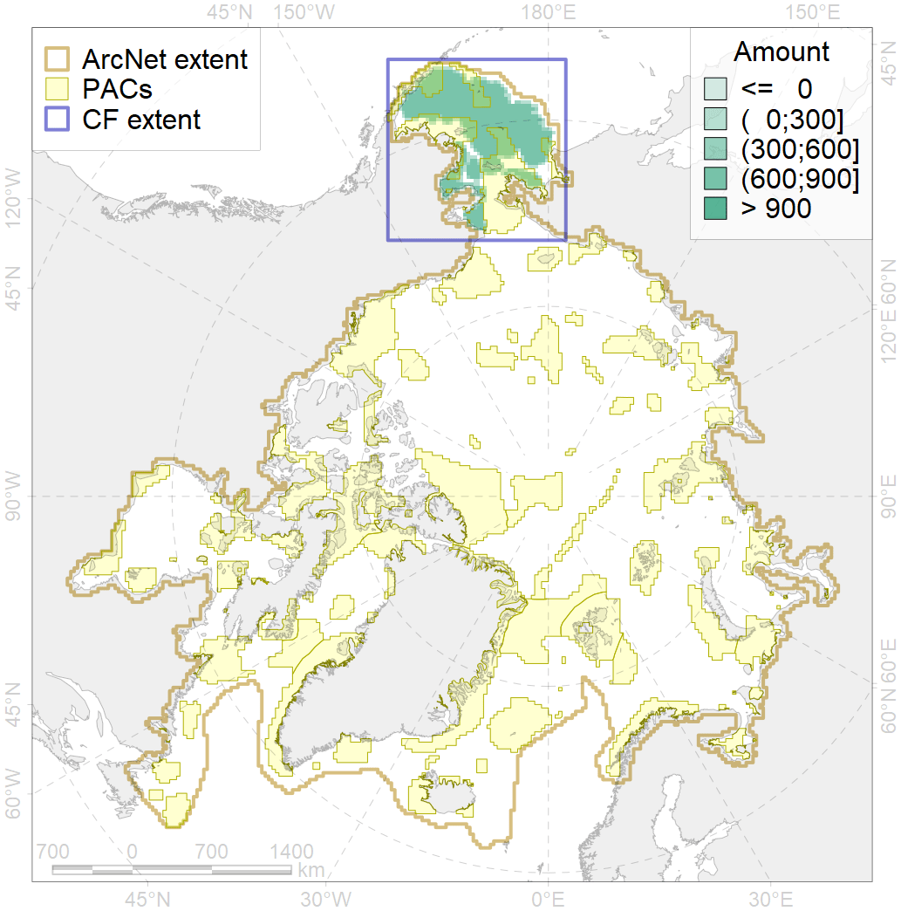
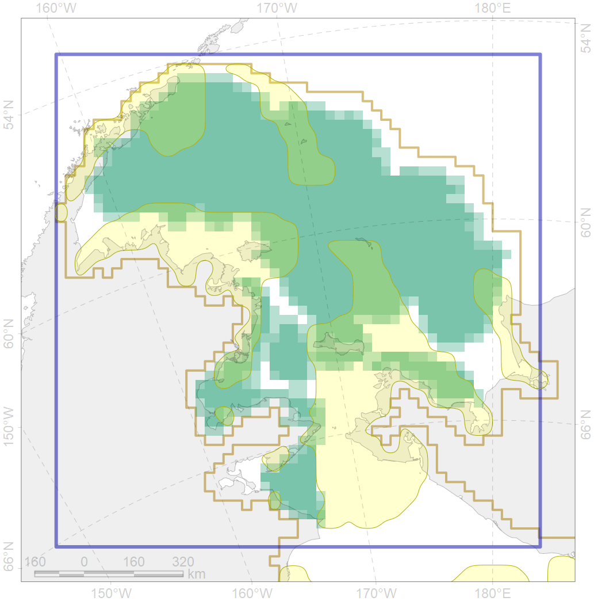

6084

| CF code | 6084 |
| CF name | Thick-billed murre (Uria lomvia) Pacific wintering grounds |
| Time Period | 1999 |
| Source(s) | Golovkin 1990, Gaston & Hipfner 2000 |
| Seasonality | October-April |
| Depth Horizon | >0 m |
| Methodology | Field Data |
| Use Restrictions | Open source |
| Author Name | Gavrilo, Tertitski |
| Notes | |
| Scenario’s Target | 0.24 |
| Target Achievement | 0.284 (Scenario: 118.3%) |
| PAC | Share of the Total Amount within the PAC | Share of the Target Achievement for the ArcNet | PAC’s Contribution to the Target Achievement |
|---|---|---|---|
| 1 | 5.1% | 19.7% | 16.6% |
| 2 | 4.2%5.0% | 13.9%14.6% | 11.8%12.3% |
| 3 | 5.7%6.2% | 20.6%21.6% | 17.4%18.3% |
| 4 | 1.2%1.2% | 4.2%4.2% | 3.6%3.6% |
| 5 | 10.7%10.7% | 41.0%41.2% | 34.7%34.8% |
| 6 | 0.0%0.1% | 0.1%0.3% | 0.1%0.2% |
| inner | 26.9%28.3% | 99.5%101.6% | 84.2%85.9% |
| outer | 73.1%77.8% | 18.7%33.5% | 15.8%28.3% |
| † supplement values are for area consistence whereas principal values are for Accenter compatible gridded stats |